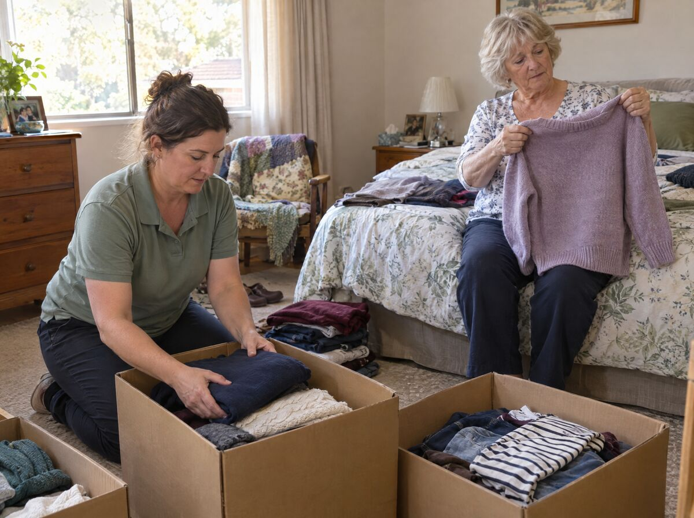
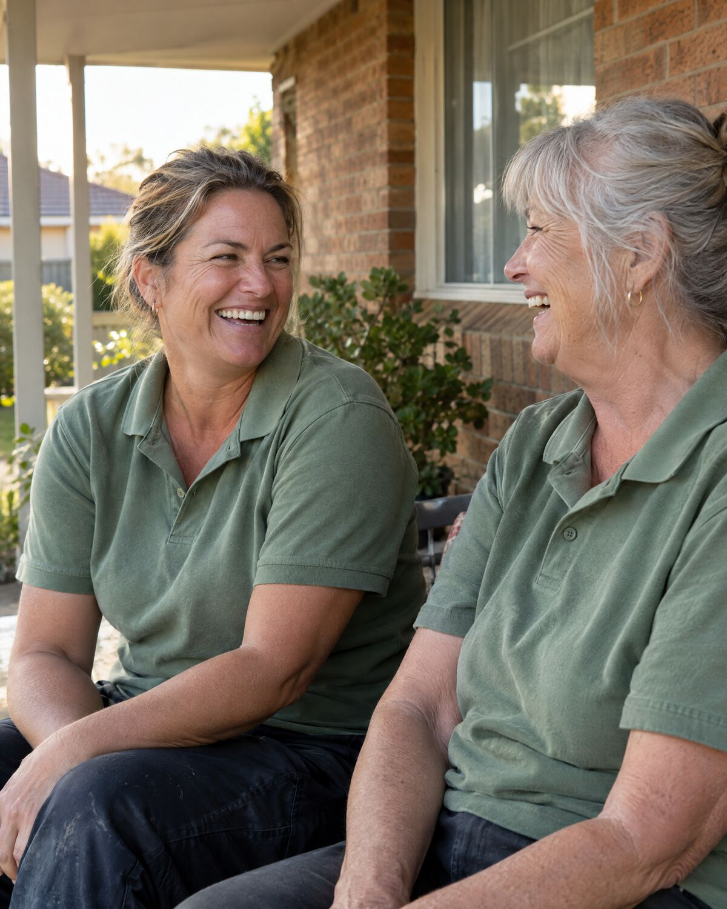
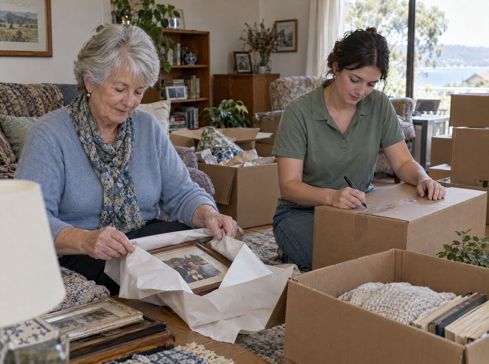
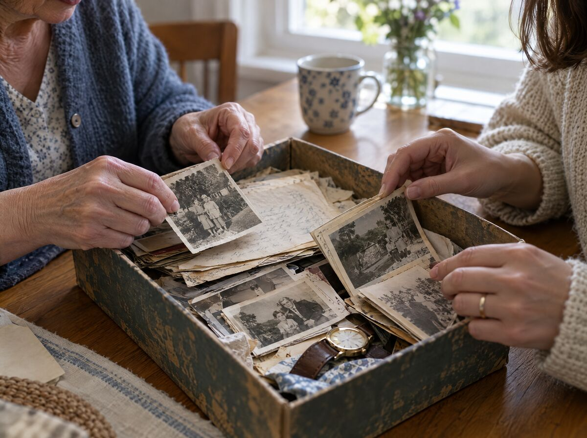
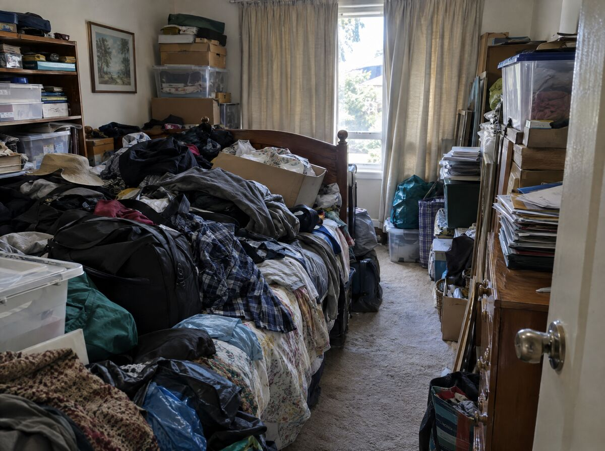
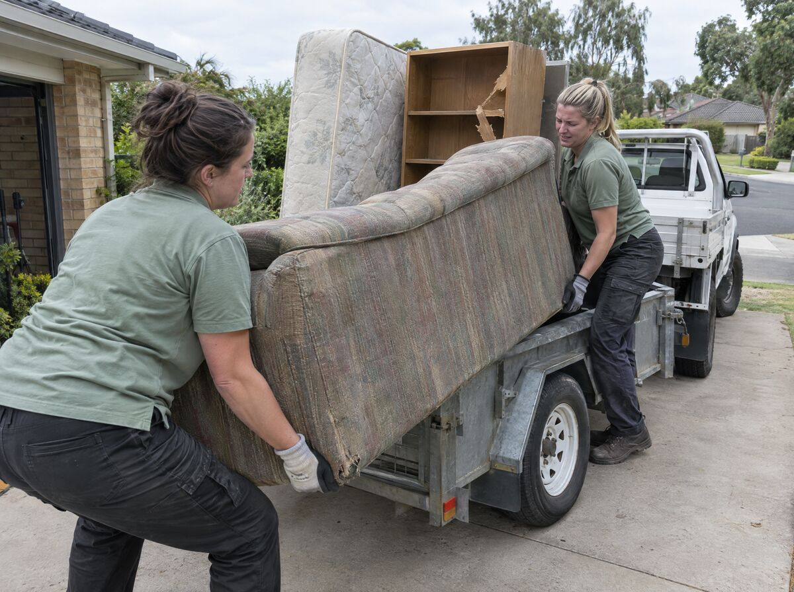
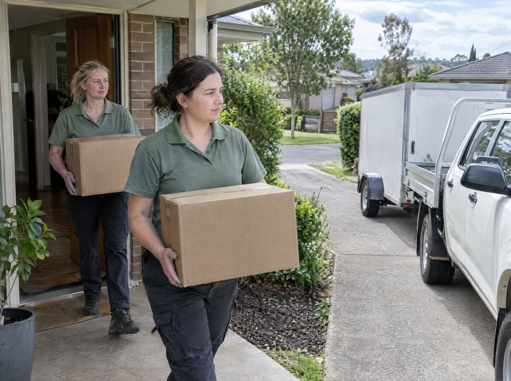
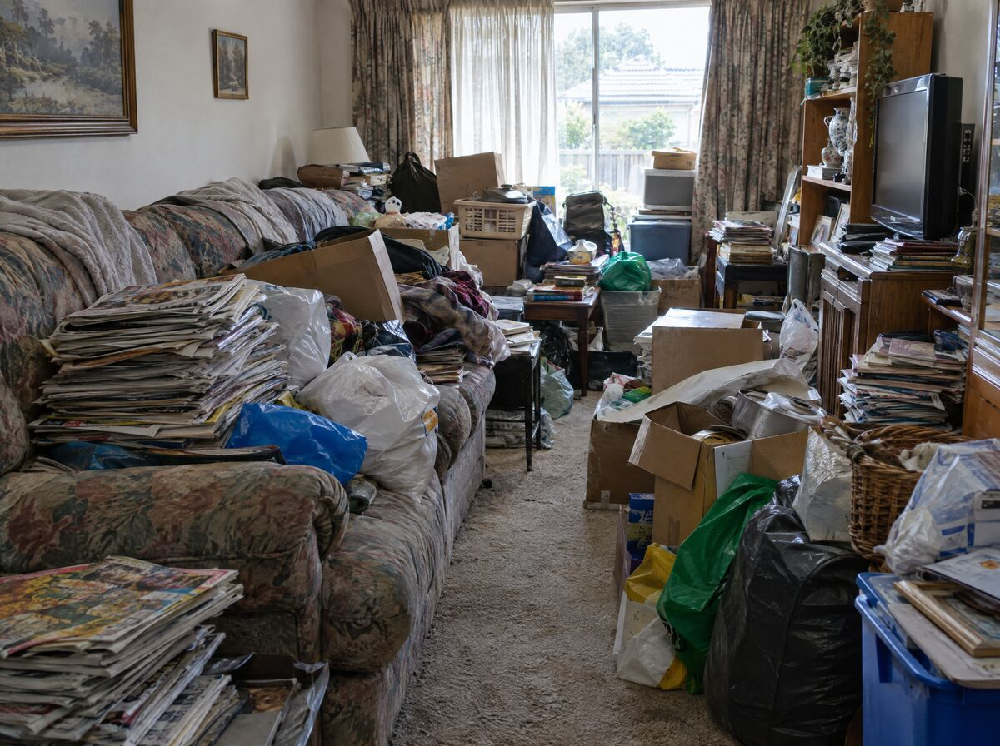
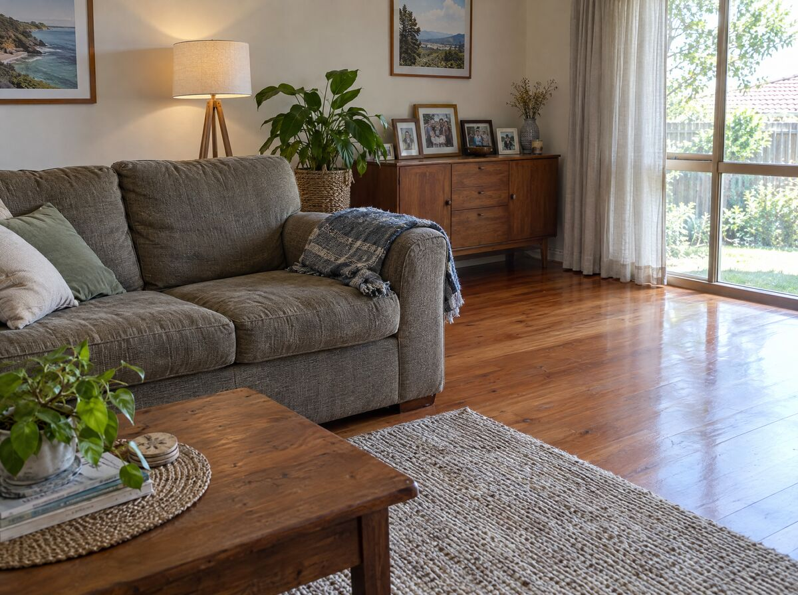
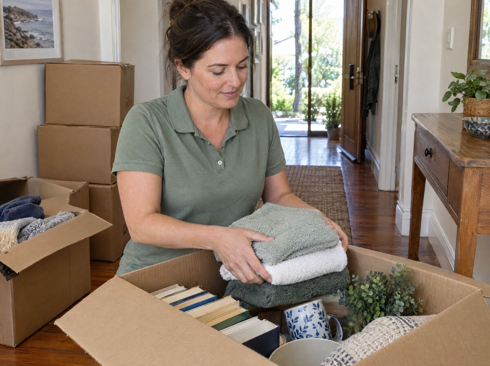

Decluttering & home organising
Too much stuff and not enough room to live. We build a step-by-step plan with you, work through the house room by room deciding what stays, then remove the excess so the space is usable again.
Learn more →A step-by-step decluttering plan, then we remove the excess: furniture, white goods, mattresses, general rubbish, garden and garage items. One all-women team, from the first sort to the final load.

A small team of women with backgrounds in personal care, health and community care, psychology and social welfare. We'll tell you who's coming before we arrive.
Don't be. We have seen every kind of home and every kind of life. You don't need to tidy before we come, and you won't hear a word of judgement from us.
No. You make every decision. We'll ask the right questions, keep things moving and make sure nothing important gets lost, but what stays and what goes is always up to you.
Registered NDIS providerDecluttering, downsizing, moving into care, clearing an estate, or reducing volume for someone's health and wellbeing. Every job starts with a conversation.

Too much stuff and not enough room to live. We build a step-by-step plan with you, work through the house room by room deciding what stays, then remove the excess so the space is usable again.
Learn more →
Moving to something smaller, or into aged care, means deciding what a lifetime of belongings comes down to. We help you decide with care, clear what isn't coming, and make the move manageable.
Learn more →
Clearing a loved one's home is heavy work at the worst possible time. We sort belongings gently, set aside what matters to the family, and arrange sale, donation and removal in line with your wishes.
Learn more →
When the volume of belongings is affecting someone's health, safety or wellbeing, we reduce it carefully and respectfully. We work at your pace, and can coordinate with support workers, family or case managers if you'd like us to.
Learn more →
The part most organisers leave you with. Once the sorting is done, we load and remove the excess: furniture, white goods, mattresses, general rubbish, garden and garage items. As much as possible goes to reuse and recycling, not landfill.
Learn more →A typical decluttering service sorts your things into “keep, donate, bin” and then drives off, leaving the bags and boxes for you to deal with. Because we're a rubbish removal company as well as an organising one, we finish the job properly, in the same visit.
Donations go to the charities we work with. Recyclables get recycled. Genuine rubbish goes on our truck. You're left with a home you can live in, not a hallway full of boxes.

If a cluttered home is affecting your health, safety or independence, decluttering and rubbish removal can often be funded through your plan. We work with self-managed, plan-managed and NDIA-managed participants, and we're happy to talk it through with you, your family or your support coordinator.
How NDIS funding works with us →Tell us a little about your situation and who manages your plan. We'll explain what we can do, what it costs, and how it's billed to your plan.
Let's make a time to talk

The initial consultation and written plan are a fixed price, so you know exactly what you're paying before we start. The decluttering and removal work itself depends on the size of the job and what you want to achieve, and we'll be upfront about that cost and work within your budget.
Yes, in many cases. We're a registered NDIS provider, so where a cluttered home is affecting your health, safety or independence the work can be funded through your plan, whether it's self-managed, plan-managed or NDIA-managed. Talk to us, your plan manager or your support coordinator about what your plan covers.
We take it away. That's what makes us different from most organising services. Donations, recycling and rubbish are separated as we go and removed by our team, usually on the same day.
It starts with a conversation. No pressure, no obligation.
Our core job is reducing volume: getting a home back to a level of stuff you can actually live with, then taking the excess away. Here's what that looks like in practice.
Too much stuff and not enough room to live. We build a step-by-step plan with you, work through the house room by room deciding what stays, then remove the excess so the space is usable again.
Moving to something smaller, or into aged care, means deciding what a lifetime of belongings comes down to. We help you decide with care, clear what isn't coming, and make the move manageable.
Clearing a loved one's home is heavy work at the worst possible time. We sort belongings gently, set aside what matters to the family, and arrange sale, donation and removal in line with your wishes.
When the volume of belongings is affecting someone's health, safety or wellbeing, we reduce it carefully and respectfully. We work at your pace, and can coordinate with support workers, family or case managers if you'd like us to.
The part most organisers leave you with. Once the sorting is done, we load and remove the excess: furniture, white goods, mattresses, general rubbish, garden and garage items. As much as possible goes to reuse and recycling, not landfill.

We wipe down as we go and everything that's leaving goes with us on the day. If you'd like a proper clean once the space is clear, we're happy to arrange it as a separate service and quote it up front.
See how a job runs from first call to final load →Most people aren't. Tell us what's going on and we'll work it out together.
You'll always know who's coming, what it will cost and what happens to your things. Here's the whole process, start to finish.
Registered NDIS providerNDIS Provider No. pendingCall 1300 XXX XXX or send us a message. Tell us what's going on, in as much or as little detail as you like. No forms to fill in first, and no obligation.
One of our team visits, walks through the space with you and, with your permission, takes photos. You get a written, step-by-step decluttering plan and a fixed price for the consultation. No surprises.
We work alongside you at a pace that suits you. What stays gets organised; the excess furniture, white goods, mattresses, rubbish, garden and garage items leave with us on the day.
Registered NDIS providerWe start with the area that's bothering you most, or a high-traffic space like the hallway or kitchen if you're not sure. Everything gets sorted as we go, and you make the call on every item.
Nothing sentimental is ever discarded without checking with you first. We wipe down as we go, and before we leave, everything that isn't staying is already on the truck or bagged for the charities we work with.
Registered NDIS providerThe home visit and written plan are a fixed price. You'll know the number before we book it, and the plan is yours whether or not you go ahead.
Decluttering and removal is quoted on the size of the job and what you want to achieve. We'll be transparent about the cost and work within your budget.
We're a registered NDIS provider. Where clutter is affecting your health, safety or independence, the work can be funded through your plan. We work with your plan manager or support coordinator and bill your plan directly.
Registered NDIS providerNDIS Provider No. pendingMinimising waste is part of who we are. Anything with life left in it is rehomed through the charities and community groups we work with.
Old towels become bedding for animal shelters. Spare furniture goes to families starting again. We'd rather find something a new home than throw it in a skip.
We started Declutter because we kept meeting women carrying the whole mental load of a home, and nobody was offering help that felt safe, practical and complete.
Registered NDIS providerNDIS Provider No. pendingMost decluttering services stop at the front door. They help you sort, then leave you with a hallway of bags and a skip to organise. We didn't think that was good enough.
So we built a team that does the whole thing: a clear plan, the careful and patient sorting, and the truck that takes the excess away, with as much as possible going to reuse and recycling instead of landfill.
Our team come from personal care, health and community care, psychology and social welfare. That matters, because the homes we work in are often at a turning point: a move, a loss, a health change, or simply a life that got busier than the house could handle. We're members of the Institute of Professional Organisers and work to the IOPO Code of Practice. Declutter is a Recycle Group initiative.
“Your home is a living space, not a storage space. Our job is to help you get it back.”
We've seen every kind of home and every kind of life. You don't need to tidy before we come.
You make every decision about what stays and what goes. We keep things moving and make sure nothing important is lost.
Bedrooms, paperwork, personal items. Everything we see stays confidential, and we're bound by the IOPO Code of Practice.
We finish the job in the same visit. Donations, recycling and rubbish all leave with us.
Registered NDIS providerAsk us. We'll tell you exactly who's on your job before we arrive.
If yours isn't here, call 1300 XXX XXX or send us a message. We're happy to talk anything through.
After an initial phone chat, one of our team visits you at home, talks through your lifestyle and what you want to achieve, and, with your permission, takes photos of each area. You then get a written, step-by-step decluttering plan and a fixed price for the consultation. From there we work with you at every stage and provide options that suit your needs and budget.
Only you can answer that. Our clients are usually feeling overwhelmed, don't know where to start, or need a decluttered and safe environment so other in-home support services can do their job. We can give you as much or as little support as you want.
No. Please don't. Seeing the space as it really is helps us plan properly, and we have seen it all before. There is no judgement here, ever.
Brisbane, Sydney, Canberra, Melbourne, Geelong, Ballarat and Bendigo. If you're somewhere else, get in touch anyway and we'll see what we can do.
The initial consultation and written plan are a fixed price, so you know exactly what you're paying before we start. The decluttering and removal work depends on the size of the job and what you want to achieve. We'll be transparent about that cost and work within your budget.
Yes, in many cases. We're a registered NDIS provider, so where a cluttered home is affecting your health, safety or independence the work can be funded through your plan, whether it's self-managed, plan-managed or NDIA-managed. Talk to us, your plan manager or your support coordinator about what your plan covers.
Our role isn't hands-on cleaning, though we wipe down as we go. If you'd like cleaning or other services, we can arrange them and they're quoted separately, up front.
For the first session we strongly recommend it, because everyone lives differently and we want to make sure nothing important is missed. Once we understand your vision, many clients prefer to leave us to it. Talk to us about what would suit you.
Usually one of our team is enough. For bigger jobs, or where there's a lot to remove, we may bring extra hands, but we'll always discuss that with you first.
Absolutely not. You're in control and you make every decision. We'll help you think it through, ask questions and keep things moving, but nothing is discarded without your say-so.
We'll work through your sentimental items with you and help you decide what really needs to stay in the home. Nothing sentimental is ever discarded without checking with you first.
Decluttering is reducing what you own to a level you can live with. Organising is giving what stays a proper home. Our core job is the first; we do enough of the second that the result lasts.
We take it away. That's what makes us different from most organising services. Furniture, white goods, mattresses, general rubbish, garden and garage items are removed by our team, usually on the same day.
Yes. Minimising waste is part of our ethos. We may be able to sell some items through various channels, and we'd love to coach you to do your own selling if you'd like. For donations we take everything away for you. We work with domestic and family violence organisations, homelessness services, animal welfare, food banks, refugee programs, community groups and local op shops.
Yes. We partner with like-minded organisations to keep as much as possible out of landfill. Old towels go to animal shelters, spare furniture goes to families starting again, and we'll list something free online rather than waste a decent item.
Completely. We often work with financial paperwork, bedrooms and very personal items. Everything we see stays confidential, and we're bound by the IOPO Code of Practice.
Yes. Hoarding is a recognised health condition and there is no shame in reaching out for help. We work in a professional, caring and compassionate way, at your pace. If it would help, we can coordinate with your support worker, family or other services.
No. A professional organiser's scope of practice doesn't extend to counselling or psychological services. We act with honesty, integrity and empathy, and if we're concerned for your welfare we can help you find the right support. Who you engage, and whether you do, is always your decision.
Yes. We have experience clearing estates with care. We'll sort belongings, set aside items the family wants to keep, and arrange for the rest to be sold, donated or removed in line with your wishes.
Ask us directly. There's no such thing as a silly one.
Tell us a little about your space and we'll come back to you with the next step. Or just call, we're happy to talk it through.
One of our team will be in touch shortly. If it's urgent, call us on 1300 XXX XXX.
Back to the homepage